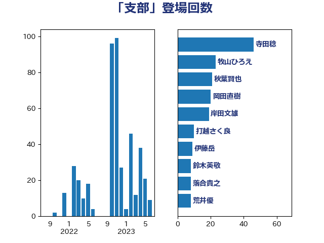

単語「支部」

| 寺田稔 | 自由民主党 | 46 回 |
| 牧山ひろえ | 立憲民主党 | 23 回 |
| 秋葉賢也 | 自由民主党 | 21 回 |
| 岡田直樹 | 自由民主党 | 20 回 |
| 岸田文雄 | 自由民主党 | 19 回 |
| 打越さく良 | 立憲民主党 | 10 回 |
| 伊藤岳 | 日本共産党 | 9 回 |
| 鈴木英敬 | 自由民主党 | 8 回 |
| 落合貴之 | 立憲民主党 | 8 回 |
| 荒井優 | 立憲民主党 | 8 回 |
| 熊谷裕人 | 立憲民主党 | 8 回 |
| 杉尾秀哉 | 立憲民主党 | 8 回 |
| 木原誠二 | 自由民主党 | 8 回 |
| 塩川鉄也 | 日本共産党 | 8 回 |
| 井坂信彦 | 立憲民主党 | 8 回 |
| 大西健介 | 立憲民主党 | 7 回 |
| 渡辺創 | 立憲民主党 | 6 回 |
| 本庄知史 | 立憲民主党 | 6 回 |
| 高橋千鶴子 | 日本共産党 | 5 回 |
| 逢坂誠二 | 立憲民主党 | 5 回 |
| 足立康史 | 日本維新の会 | 5 回 |
| 芳賀道也 | 国民民主党 | 5 回 |
| 米山隆一 | 立憲民主党 | 5 回 |
| 後藤祐一 | 立憲民主党 | 5 回 |
| 加藤勝信 | 自由民主党 | 5 回 |
| 井上哲士 | 日本共産党 | 5 回 |
| 階猛 | 立憲民主党 | 4 回 |
| 鎌田さゆり | 立憲民主党 | 4 回 |
| 渡辺周 | 立憲民主党 | 4 回 |
| 松本剛明 | 自由民主党 | 4 回 |
| 山添拓 | 日本共産党 | 4 回 |
| 阿部司 | 日本維新の会 | 3 回 |
| 穀田恵二 | 日本共産党 | 3 回 |
| 源馬謙太郎 | 立憲民主党 | 3 回 |
| 斎藤アレックス | 国民民主党 | 3 回 |
| 山下雄平 | 自由民主党 | 3 回 |
| 宮本岳志 | 日本共産党 | 3 回 |
| 守島正 | 日本維新の会 | 3 回 |
| 井野俊郎 | 自由民主党 | 3 回 |
| 長妻昭 | 立憲民主党 | 2 回 |
| 金村龍那 | 日本維新の会 | 2 回 |
| 遠藤良太 | 日本維新の会 | 2 回 |
| 近藤和也 | 立憲民主党 | 2 回 |
| 西田昭二 | 自由民主党 | 2 回 |
| 福島みずほ | 社会民主党 | 2 回 |
| 石垣のりこ | 立憲民主党 | 2 回 |
| 東徹 | 日本維新の会 | 2 回 |
| 本村伸子 | 日本共産党 | 2 回 |
| 山本太郎 | れいわ新選組 | 2 回 |
| 山岸一生 | 立憲民主党 | 2 回 |
| 尾崎正直 | 自由民主党 | 2 回 |
| 小沢雅仁 | 立憲民主党 | 2 回 |
| 安江伸夫 | 公明党 | 2 回 |
| 高木真理 | 立憲民主党 | 1 回 |
| 長浜博行 | 無所属 | 1 回 |
| 里見隆治 | 公明党 | 1 回 |
| 谷公一 | 自由民主党 | 1 回 |
| 藤岡隆雄 | 立憲民主党 | 1 回 |
| 紙智子 | 日本共産党 | 1 回 |
| 笠浩史 | 無所属 | 1 回 |
| 笠井亮 | 日本共産党 | 1 回 |
| 稲津久 | 公明党 | 1 回 |
| 秋本真利 | 無所属 | 1 回 |
| 福山哲郎 | 立憲民主党 | 1 回 |
| 浜田靖一 | 自由民主党 | 1 回 |
| 永岡桂子 | 自由民主党 | 1 回 |
| 森山浩行 | 立憲民主党 | 1 回 |
| 早稲田ゆき | 立憲民主党 | 1 回 |
| 斉藤鉄夫 | 公明党 | 1 回 |
| 川合孝典 | 国民民主党 | 1 回 |
| 岸真紀子 | 立憲民主党 | 1 回 |
| 山田賢司 | 自由民主党 | 1 回 |
| 山下芳生 | 日本共産党 | 1 回 |
| 小野泰輔 | 日本維新の会 | 1 回 |
| 小川淳也 | 立憲民主党 | 1 回 |
| 寺田学 | 立憲民主党 | 1 回 |
| 奥野総一郎 | 立憲民主党 | 1 回 |
| 大島九州男 | れいわ新選組 | 1 回 |
| 城井崇 | 立憲民主党 | 1 回 |
| 嘉田由紀子 | 無所属 | 1 回 |
| 伊藤孝恵 | 国民民主党 | 1 回 |
| 伊藤俊輔 | 立憲民主党 | 1 回 |
| 仁比聡平 | 日本共産党 | 1 回 |
| 中川康洋 | 公明党 | 1 回 |
| 上田勇 | 公明党 | 1 回 |
| 上杉謙太郎 | 自由民主党 | 1 回 |